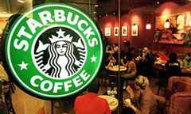

Listen, acknowledge, take action [The Guardian]
Submitted on Fri, 02/29/2008 - 11:04pm
Disclaimer - The opinions of the author do not necessarily match those of the IWW. The image pictured to the right appeared in the original article. This article is reposted in accordance to Fair Use guidelines.
Andrew Clark in New York - guardian.co.uk, Friday February 29 2008
 It was tough - but Americans soldiered on. For three hours on Tuesday afternoon, Starbucks outlets across the nation closed their doors for a mass barista training session aimed at perking up coffee quality. But was this shutdown an espresso masterclass or simply a public relations masterstroke?
Nicknamed "fourbucks" for the hefty price of its brew, Starbucks holds a special place in modern culture. It has injected new words into popular discourse – Frappuccino, half-caff. Apparently a "red-eye" means an extra shot. And to many people, the Italian word "venti" has become an adjective meaning extra large.
Chairman Howard Schultz is anxious to reverse a worrying decline in the average number of transactions per store. Baristas, from now on, will be expected to chat more vigorously to customers rather than preparing drinks in silence.
Shots will be dispensed into shot glasses, rather than plastic cups. Staff will be checking the colour of the brew more carefully and monitoring the steam emissions from machines.
Starbucks has stuck up notices in every branch with a faithful promise: "Your drink should be perfect, every time. If not, let us know and we'll make it right."
It's all good management school stuff. But not everybody is impressed. Peter Montalbano, a barista at one New York branch, says: "It didn't really do much for me. They had this abbreviation – LATTE. Listen, acknowledge, take action, thank and ... I forget what 'e' stands for.
"A lot of people had questions – what to do when customers get disruptive, when the queues get too long and people start complaining. They just kept telling us to go through the LATTE routine."
On Conde Nast Porfolio's spin blog, Jack Flack argues that the shutdown backfired in public relations terms because it simply got the media talking about the declining quality of Starbucks' coffee: "Instead of showing that it was making progress against its perceived problems, Starbucks actually raised the awareness of a new problem. Check the past coverage of Starbucks' recent woes, and you'll see little criticism of the actual quality of the coffee. Most of the attention focused on long lines, poorly maintained stores that were too close to each other and the invasive smell of food."
Despite growing to a 15,000-store multinational with annual revenue of $9.4bn, Starbucks has cultivated a slightly hippy image. The chain releases Joni Mitchell and Paul McCartney songs through its stores, supports zebra conservation in Africa, trumpets its commitment to fair trade coffee and is based in the liberal heartland of Seattle.
Unions, however, complain that Starbucks' social activism does not extend to employees. Almost all baristas are on part-time contracts with no certainty on how many hours they will work – one week, it can be 35 hours, then 21 the following week and 12 hours the week after.
Irregular hours, low pay?
The Industrial Workers of the World a hard-left union based in Ohio, says baristas typically get a modest $6 to $8 an hour – a figure on which Starbucks declines to comment. Daniel Gross, an IWW activist, says understaffing and overwork is the real cause of the company's woes.
"They're very keen to shove rhetoric down workers' throats but at the end of the day, you're standing behind an understaffed counter," says Gross. "Exhaustion is not uncommon after a day of making hundreds and hundreds of drinks. We're seeing cases of repetitive strain injury, of carpal tunnel syndrome."
Starbucks takes issue with this – a spokeswoman, Stacey Krum, says: "I wouldn't agree. I would say that in every store, the manager makes decisions on staffing levels to ensure every customer is getting a good Starbucks experience."
She says many of Starbucks' staff are younger people who like the flexibility of part-time working. And she points out that the company is in a minority among American retailers in offering healthcare benefits to part-time employees.
As a strategic review continues, there are more changes on the horizon at Starbucks. Through a deal with AT&T, the chain will soon be offering free wireless internet connection to its loyalty card holders – something most independent coffee houses already provide.
This might help persuade people that Starbucks stores are inviting places to spend time. Taylor Clark, author of "Starbucked: a double tall tale of caffeine, commerce and culture" reckons a lot of the firm's woes are down to an increasingly drab feel its branches.
"I really do think the quality of the stores has dropped off. Starbucks used to be a place where people could go and feel warm and welcome," says Clark. "Some of the new stores don't have a comfortable feel. I've been into some with hard plastic chairs. They feel a little too modular – like cheap Ikea-furnished outlets."
In the first quarter, Starbucks' profits ground to a near standstill, rising just 2% to $208m – a paltry increase by its own heady standards.
Many coffee-watchers believe that if anybody can fix the problem, Howard Schultz can. The architect of Starbucks growth in the 1990s, he returned to hands-on control in January when chief executive Jim Donald was ousted..
Clark says: "Schultz is a God-like figure to those within Starbucks. He's incredibly charismatic. He's the living embodiment of everything Starbucks stands for and he's the image of a guy who would never let the company get away from him – yet, somehow, he did."